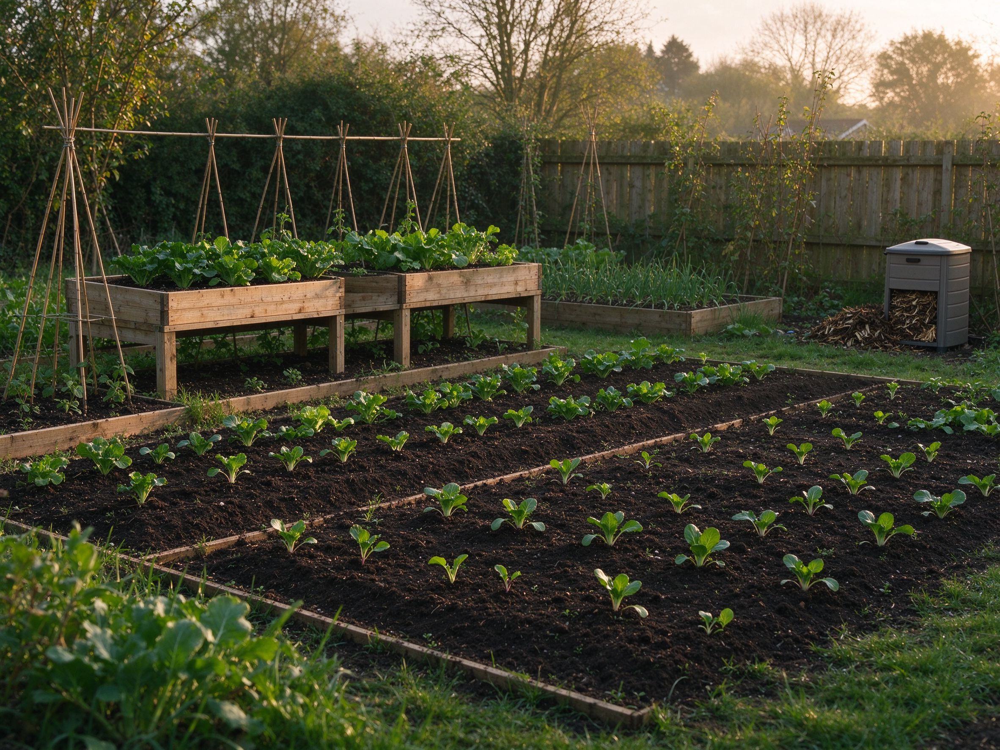

How to Start a Vegetable Garden: A Complete Beginner's Guide
Starting a vegetable garden can feel overwhelming, but it really comes down to four steps: pick a spot, prepare the soil, choose the right plants, and water consistently. Here's the exact plan I use to help complete beginners get their first harvest.
Step 1: Choose a Sunny Spot
Most vegetables need 6–8 hours of direct sunlight a day. Look for a spot against a south or west-facing wall, or on a balcony that gets morning sun. If you only have partial sun, choose shade-tolerant crops like lettuce, spinach, and kale.
Step 2: Prepare the Soil
Good soil is the single biggest factor in a successful garden. Mix in compost or aged manure a couple of weeks before planting. Aim for soil that crumbles easily and holds moisture without staying soggy.
Step 3: Pick Beginner-Friendly Plants
- Tomatoes — easy in containers, high reward.
- Lettuce & greens — fast, harvest within a month.
- Herbs (basil, parsley) — forgiving and productive.
- Radishes — ready in about a month, great for confidence.
Step 4: Water Consistently
Water deeply and less often rather than little and often. Check the top inch of soil — if it's dry, it's time to water. Morning watering reduces evaporation and disease.
How Much Space Do You Need?
The great news: you don't need a big yard. A single 4×4 foot raised bed or even a few large pots on a balcony is enough to grow salads, herbs, and tomatoes for one person. Start small and expand as you gain confidence.
When to Plant
Read seed packets — they tell you exactly when to start. As a general rule, wait until the danger of frost has passed in spring. Many fast crops like lettuce and radishes can be planted every couple of weeks for a continuous harvest.
Common Beginner Mistakes to Avoid
- Overwatering — more plants die from too much water than too little.
- Planting too early — cold soil stops seeds from sprouting.
- Choosing hard crops first — start with easy wins like lettuce and herbs.
Start small. A few pots or a single raised bed is enough. The goal isn't perfection — it's your first homegrown meal. For more ideas, see our guide to container gardening on a balcony or growing herbs indoors all year round.